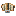

完整翼面横置于主体底部开口，地面与滑翔保持同一外形。
速度取滑翔条件判断前的参考值；判定使用相对风速，严格大于0.12且正在下降。数量与载重是参考输入，三维只画一件翼；页面不计算轨迹或模拟游戏。
前半剖开只切主体，翼面始终完整；关闭剖开或选择「底部 · 完整仰视」检查实际外形。
绿色虚线为原碰撞盒；浅色为布面，棕色为木架，绿色为两件固定连接座。切换剖面位置可查看根部与槽顶接触。

只修订底部翼的显示装配：完整双侧布面、木骨架和原根部接口保留，增加两件固定短座与配套主体凹槽；不用折叠、收缩或缩小翼面避地。
现有机械翼仍是被动部件，不耗电、不拍动、不按朝向新增空气动力学。安装预览与实装必须使用相同结构，其他五个方向保持原件。
本包是美术结构样片；显示变体与底部适配尚未导入游戏，实际安装、复杂地形、骑乘、组合件及风天气仍须后续实机验证。
Blender 可编辑工程 · Blockbench 翼与固定座 · 凹槽主体源稿 · 结构说明 · 几何验证
结构方案已获用户采用。翼面纹理、原件、节点选取、碰撞与滑翔规则保持；页面不是实机物理模拟。